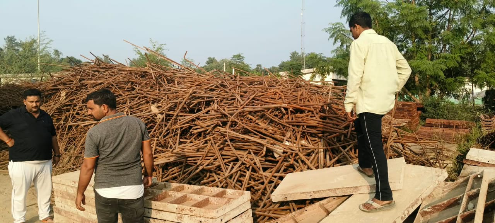

01 / PRINCIPLE
Trust
Build business relationships through direct and dependable communication.

Serving scrap material enquiries in Sarojini Nagar and Lucknow.
We are a scrap metal trading business based in Sarojini Nagar, Lucknow, Uttar Pradesh.
Our business handles enquiries for iron scrap, MS scrap, aluminium, old factory scrap, industrial machinery scrap, factory dismantling scrap, raddi and other waste material. We work with customers to understand what material is available and discuss the enquiry directly.
For pricing, quantity and collection discussions, contact us by phone or WhatsApp. We aim to keep communication clear and practical from the first conversation.
GET IN TOUCH ↗Build business relationships through direct and dependable communication.
Discuss material details and requirements openly.
Stay responsive through the enquiry and coordination process.
Support the trading and recovery of reusable scrap materials.